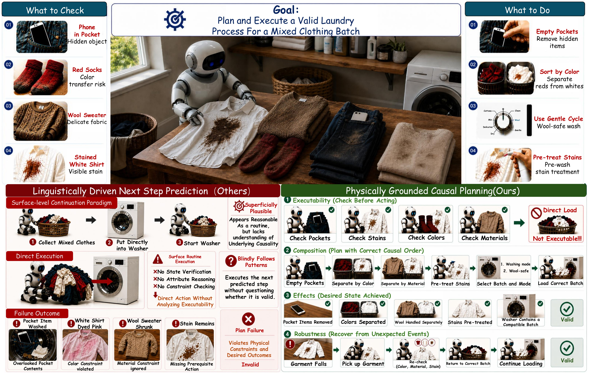
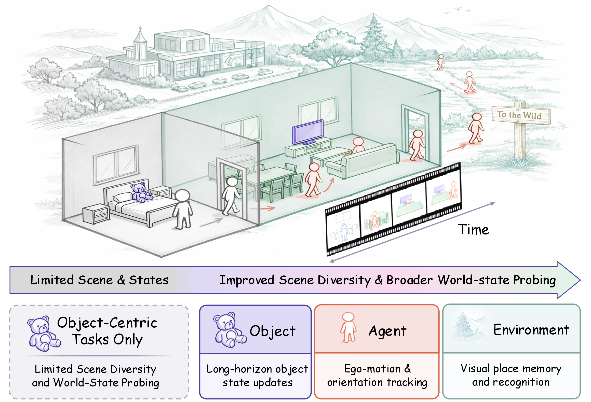
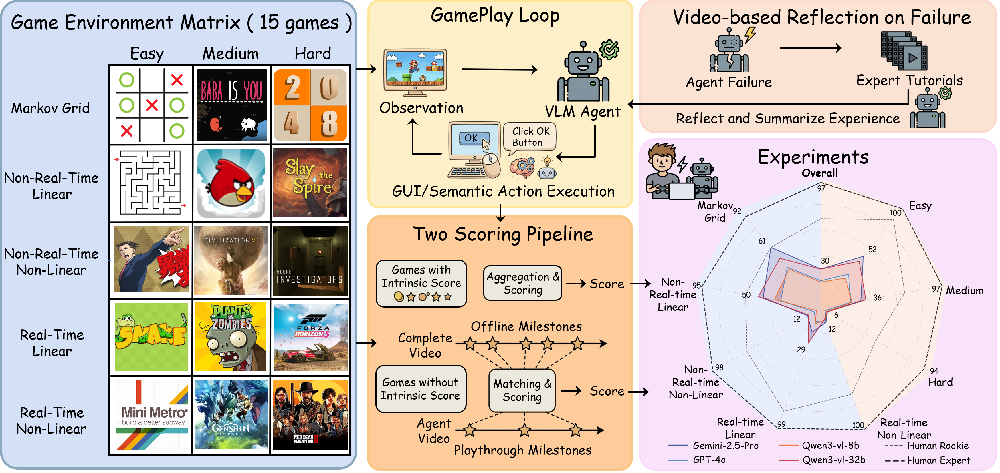

I am Qinlei Xie (谢钦磊), an undergraduate at Dalian University of Technology, majoring in Big Data Management and Application, with an expected graduation in June 2028. I have conducted research at Tsinghua University.
I am interested in learning world representations that improve how robots act. My broader interests include the action capabilities of vision-language-action models (VLAs), joint world-action representations, and video world models for robot learning. I am also interested in incorporating tactile and force feedback into manipulation policies to capture contact information that vision alone cannot reliably observe.
| Scope | Focus |
|---|---|
| Long-term goal | Build generalizable robot manipulation policies by jointly learning world representations and actions, incorporating visual, tactile, and force feedback. |
| Current work | Study action-conditioned residual latent dynamics in visual JEPA world models: predict state changes rather than full future representations, and evaluate their effect on planning and multi-step rollouts. |
| Current exploration | Explore the capabilities and limitations of LLMs in robotics, and how to improve latency and real-time responsiveness, fine-grained manipulation, and dexterous hand control. |
I welcome discussions, suggestions, and guidance on these questions.

arXiv
ECCV
ICMLDalian University of Technology
B.S. in Big Data Management and Application
September 2024 - June 2028 (expected)
Powered by Jekyll and Minimal Light theme.